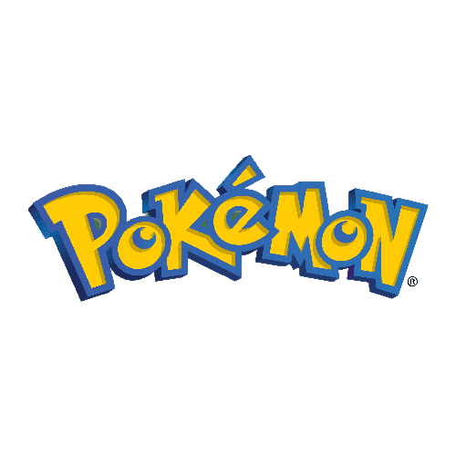
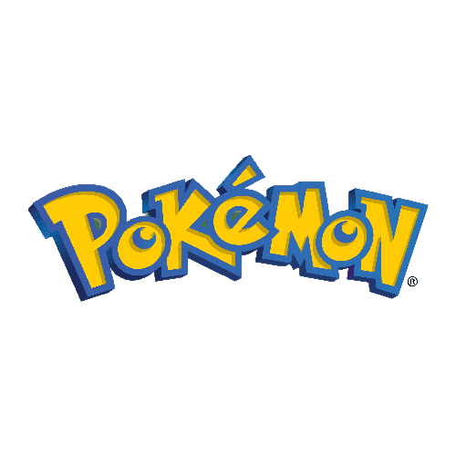

-
Bulbasaur #001

- Grama
- Veneno
Há uma semente de planta em suas costas desde o dia que este Pokémon nasce. A semente cresce lentamente.
-
Ivysaur #002

- Grama
- Veneno
Quando o bulbo em suas costas cresce, parece perder a capacidade de ficar de pé em suas patas traseiras.
-
Venusaur #003

- Grama
- Veneno
Sua planta floresce quando está absorvendo energia solar. Ele permanece em movimento para buscar a luz solar.
-
Charmander #004

- Fogo
Tem preferência por coisas quentes. Quando chove, diz-se que o vapor jorra da ponta da sua cauda.
-
Charmeleon #005

- Fogo
Charmeleon é um pequeno Pokémon bípede semelhante a um dinossauro com uma aparência semelhante à de sua forma pré-evoluída, Charmander.
-
Charizard #006

- Fogo
- Voador
Charizard é um grande Pokémon semelhante a um dragão que difere muito de sua forma pré-evoluída. A coloração vermelha da pele de Charmeleon não é mais aparente, já que Charizard parece ter revertido para a coloração laranja/amarela de Charmander.
-
Squirtle #007

- Água
Squirtle é um pequeno Pokémon azul claro com uma aparência semelhante a uma tartaruga. Com sua forma aerodinâmica e superfície ranhurada, a concha de Squirtle ajuda a percorrer a água muito rapidamente.
-
Wartortle #008

- Água
Wartortle é um Pokémon pequeno, bípede e parecido com uma tartaruga, com uma aparência semelhante à de sua forma pré-evoluída, Squirtle.
-
Blastoise #009

- Água
A blastóide é um Pokémon grande, semelhante a uma tartaruga, com algumas características semelhantes às de suas formas pré-evoluídas.
-
Caterpie #010

- Inseto
Caterpie é um verme Pokémon que é principalmente de cor verde com uma parte inferior bronzeada.
-
Metapod #011

- Inseto
O Metapod é um Pokémon semelhante a um inseto com uma aparência semelhante à de uma crisálida ou casulo de cor verde.
-
Butterfree #012

- Inseto
- Voador
Butterfree é um Pokémon semelhante a um inseto que aparece como uma grande borboleta. Butterfree tem um corpo roxo grande com membros azuis claros e um nariz com presas muito pequenas.
 
